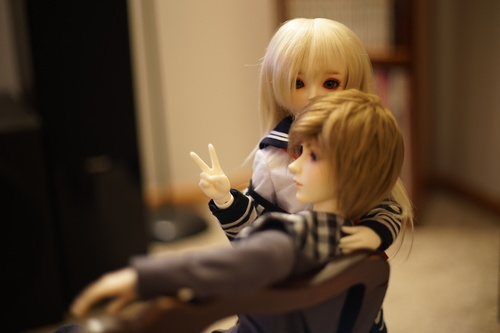

it's come to my attention that recently, many internet users do not know how to remain safe on the internet! early in my life there were many things that were common knowledge that have seem to be forgotten
fran hat is my real name but i'm very internet experienced so please do not follow my lead!
social media normalized sharing this but that doesn't mean you should do it.
i am also guilty of this. don't look at my about page.
posting pictures of your surroundings can reveal a lot about your location, even if you aren't in the photo
even more foolish is to tell them when you're leaving on vacation. say goodbye to your nintendo switch, sucker!
not even this!
i've met a nigerian prince and he was not real.
this limitless information bombarding you constantly is destroying your mind
are you ready to take safety to the next level?
lets face it: 13 year old are the most uninteresting people to talk to and cant carry a conversation. if the person you're speaking has more to say to you than "LMAO POTATO" they are lying about their age.
yes i did just google your username and found your location and your real name.
unless you want to be kidnapped, of course.
if he was, he wouldn't be talking to a kid.
it's always pizza. y'all need to try some different foods.
jesus h christ.
if you are under 18 and someone starts messaging you about anything sexual, block them. if they creep you out, block them.
now you may be asking yourself: "what could fran hat possibly know about the old web? fran hat, you are 17. you were not even alive for 9/11." the answer is quite simple.
last week i broke my favorite salt shaker. it was truly awful. i had dropped my little chickie out of the cupboard and he was covered in hairline cracks all over. i know he is just a little guy from the dollar tree, but I was really sad because I love him! here's a photo of the pair. you can see the crack through the belly of the one on the right.
today ryan had me open up a package that came in the mail. i unwrapped like 5 layers of bubble wrap to find.. a new pair of lil chickens ;_____________;
ryan is too sweet. i'm so afraid i'll break these little guys though. ill do my best to be brave enough to use them and also be careful enough to keep them safe.
my final message of the day is to please quit trying to cancel people. next to social media, this is one of the worst things to have come out of the internet in the past 12 years. it's miserable. it's stupid. it's a waste of energy. you are not entitled to the internet more than anyone else. there must be something more interesting in your life to do.